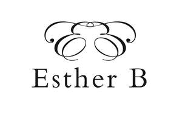

Trade Mark Journal No.2025/010 7 March 2025
UK00004164007 22 February 2025 (18,20,24,25,31)

- Class 18
- Bags; Tote bags; Drawstring bags; Luggage, bags, wallets and other carriers; Cloth bags; Canvas bags; Clutch bags; Shoulder bags; Cosmetic bags; Reusable shopping bags; Beach bags; Frames for bags [structural parts of bags]; Evening bags; Evening purses; Evening handbags; Weekend bags; Casual bags; Fashion handbags; Clutch purses [handbags]; Pocketbooks [handbags]; Purses; Handbag straps; Clutch purses; Purse frames; Coin purse frames; Drawstring pouches; Pouches for holding make-up, keys and other personal items; Cross-body bags; Toiletry bags; Makeup bags; Carry-all bags; Pouches; Textile shopping bags; Straps for handbags; Handbags, purses and wallets.
- Class 20
- Frames; Frames for pictures; Frames (Picture -) of metal; Photograph frames of wood; Photograph frames of metal; Carved picture frames; Paper picture frames; Picture and photograph frames; Storing boxes, not of metal; Works of art of wood, wax, plaster or plastic; Works of art of nutshell; Glass for use in framing art; Mirror frames; Mirrors; Furniture and furnishings; Cushions [furniture]; Ceramic pulls for cabinets, drawers and furniture.
- Class 24
- Fabric; Linen [fabric]; Fabrics; Silk fabric for printing patterns; Lace fabrics; Textile fabrics; Silk fabrics; Woven fabrics for furniture; Silk fabrics for furniture; Textiles; Textiles for furnishings; Handkerchiefs of textiles; Household textiles; Textile tablecloths; Tablemats of textile; Furniture coverings of textile; Textiles made of cotton; Textiles made of linen; Textile handkerchiefs; Textile napkins; Curtains made of textile fabrics; Serviettes of textile; Textile piece goods; Interior decoration fabrics; Textiles for upholstery; Materials for soft furnishings; Printed fabrics; Soft furnishings; Furnishing and upholstery fabrics; Coverings (Furniture -) of textile; Printed textile labels; Textile labels; Labels (textile); Quilts of textile; Jute fabric; Cotton fabrics; Artificial silk; Viscose textiles; Cushion covers; Cushion covering materials; Bed linen and blankets; Textile napkins [table linen]; Table cloths; Fabric table toppers; Cloth bunting; Bed linen and table linen; Silk [cloth]; Kitchen and table linens; Fabric table runners; Place mats of textile; Wall decorations of textile; Wall fabrics; Table covers; Tea towels; Towels of textiles; Apparel fabrics; Wall hangings; Throws; Sew-on tags of textile for clothing; Woven fabrics; Knitted fabrics; Tags of textile for attachment to linen; Tags of textile for attachment to clothing; Woven labels; Mural hangings [textile]; Cloth handkerchiefs; Cloth napkins; Tea cloths.
- Class 25
- Clothing; Pocket squares [clothing]; Silk scarves; Silk ties; Scarves; Scarfs; Neck scarves; Aprons.
- Class 31
- Flowers; Dried flowers for decoration; Natural plants and flowers; Preserved flowers; Dried flower arrangements; Floral decorations [dried]; Plants, dried, for decoration; Dried herbs for decoration; Floral decorations [natural]; Seeds; Dried plants; Dried flowers; Arrangements of dried flowers for decorative purposes; Preserved flowers for decoration; Grasses [plants].
Esther Burdett